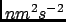
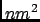

Next: Quasi Harmonic Analysis
Up: Auto-Regressive Analysis
Previous: Parameters
Contents
The results of an ARA analysis are stored in a NetCDF file whose main variables are namely:
- time_vacf: the times in ps at which the autoregressive VACF was evaluated,
- vacf: the corresponding autoregressive VACF in ,
- frequency: the frequencies in THz at which the autoregressive DOS was evaluated,
- dos: the corresponding autoregressive DOS,
- time_msd: the times in ps at which the autoregressive MSD was evaluated,
- msd: the corresponding autoregressive MSD in ,
- time_memory: the times in ps at which the autoregressive VACF memory function was evaluated,
- memory_function: the corresponding autoregressive VACF memory function,
- n: the index for the autoregressive coefficients
 ,
,
- ar_coefficients: the autoregressive coefficients .
pellegrini eric
2009-10-06